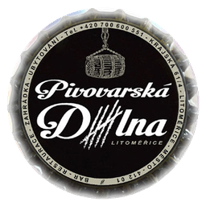
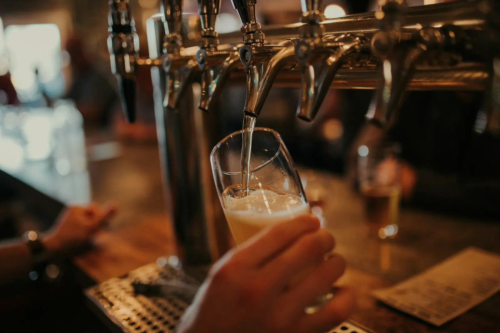
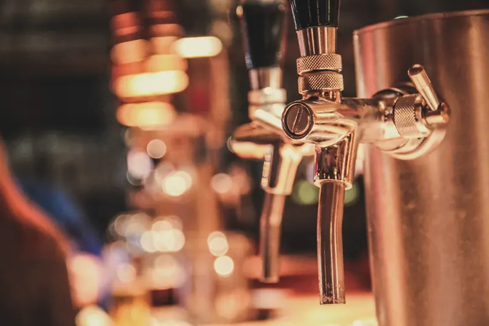
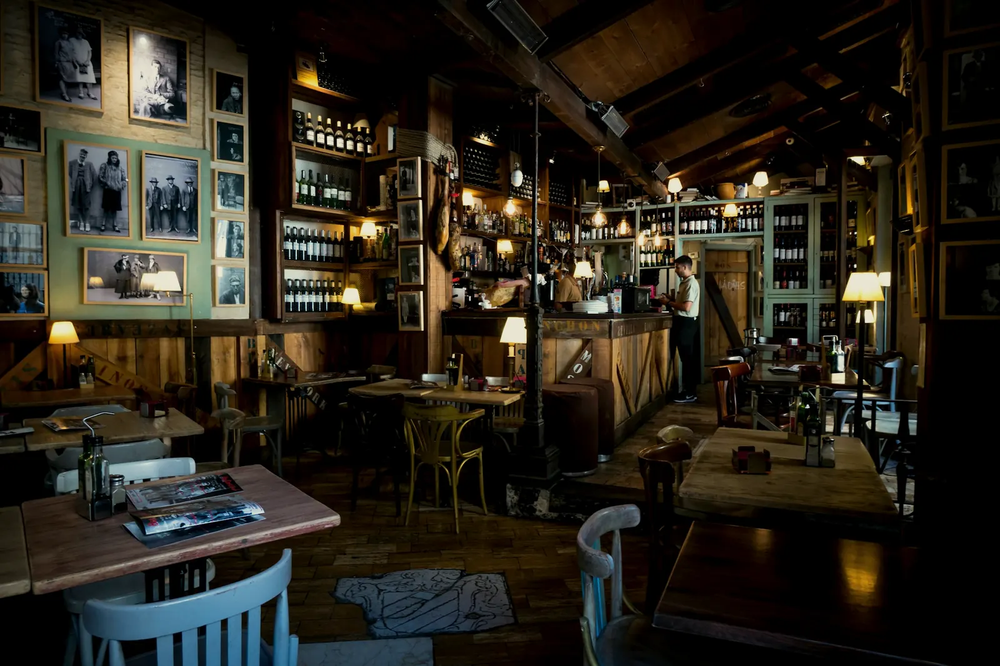
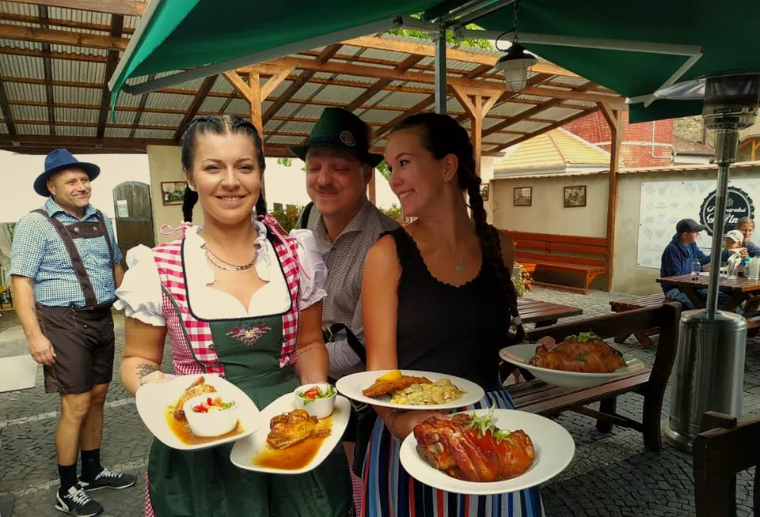
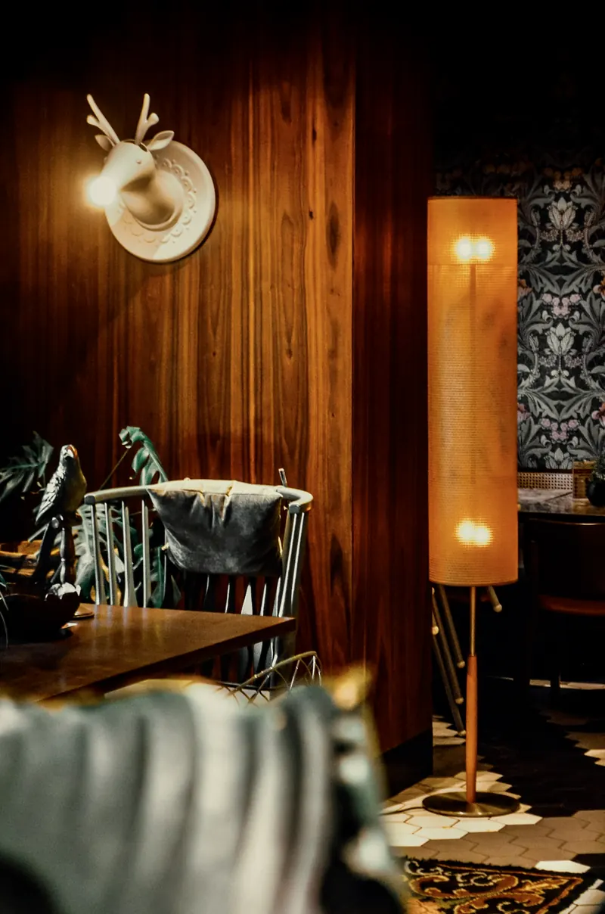
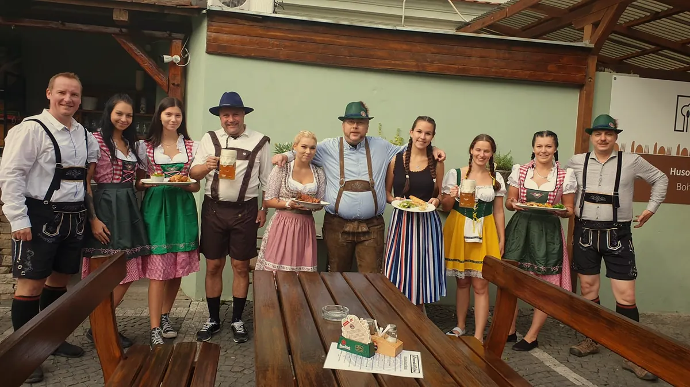

01 Dílna
Dřevo, mosaz
a pěna.
Hospůdka v centru Litoměřic, která uvaří českou klasiku i moderní jídla.

Pivovarská dílna Rezervace

02 Výčep
Podle nápojového lístku. Nabídka piv se mění — ptejte se obsluhy.
03 Polední menu
Polévka a čtyři hlavní jídla. Menu se aktualizuje automaticky každý den.
Zdroj: menicka.cz ↗
Načítám polední menu…
Informace o alergenech na požádání u obsluhy.

„Hledáte posezení u vynikajícího piva, chutného jídla a to vše v prostředí s výjimečnou atmosférou?“

05 Atmosféra
V létě je pro vás k dispozici naše krásná zahrádka. Rádi pro vás připravíme svatby, oslavy, firemní večírky i smuteční hostiny.
Poptat akci

06 Návštěva